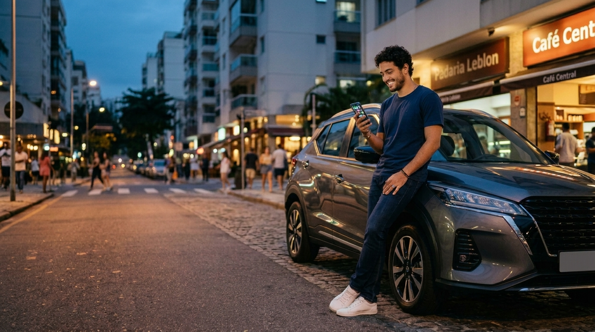

O TotexCar Co-pilot é o assistente do seu carro dentro do WhatsApp. Nada de baixar app: você conversa, ele resolve. Este é o mapa completo dos módulos — com o que mandar para usar cada um.
🎟️ Participar do sorteio — 1 ANO GRÁTIS 5 sorteados · cadastro em 1 minuto · voucher na horaAbasteceu, trocou óleo, pagou estacionamento? Manda que ele registra e organiza por categoria. Aceita texto, áudio e foto do comprovante — ele lê a notinha sozinho.
gastei 250 de gasolina 📷 foto da notinha 🎤 áudio falando o gastoEle cruza seus abastecimentos com a quilometragem e te conta o que ninguém sabe do próprio carro: quantos km/L faz de verdade e quanto custa cada km rodado.
quanto meu carro gasta? 📷 foto da bomba ao abastecerCadastre seu financiamento e ele acompanha as parcelas, avisa antes do vencimento e te ajuda com o boleto — direto na conversa.
como está meu financiamento? me manda o boleto da parcelaRoda de aplicativo? Mande os prints de ganhos e os cupons que ele monta seu resumo da semana: faturou, gastou, sobrou. Seu carro vira um negócio com resultado na mão.
📷 print dos ganhos do dia resumo da semanaEle guarda as datas e te avisa antes — 30, 15, 7 e 1 dia — sem você pedir. Chega de multa por esquecimento ou surpresa no bolso.
quando vence meu IPVA? meus vencimentosRegistre a multa e ele acompanha o prazo para recorrer, avisando antes de expirar — com orientação do próximo passo.
levei uma multa qual o prazo do meu recurso?Pela sua quilometragem real, ele projeta troca de óleo, revisões e itens de desgaste — e avisa "faltam X km" antes de virar problema caro.
estou em dia com a manutenção? quando é a próxima troca de óleo?Comprou na loja parceira? Acompanhe cada etapa da transferência (vistoria, ATPV-e, taxas, novo CRLV) sem ligar pra ninguém — e receba o aviso quando concluir.
como está minha transferência?Pneu furou, bateria arriou, precisa de guincho? Ele encontra oficina, borracharia, elétrica e guincho perto de onde você está, com telefone e endereço.
/radar preciso de um guinchoVai pegar estrada? Ele monta o roteiro com pedágios, custo de combustível calculado pelo consumo real do seu carro e boas paradas no caminho.
planejar viagem quanto gasto até a praia?Quanto vale seu carro hoje? Ele consulta a tabela FIPE ao vivo — e a loja parceira pode te fazer uma proposta de recompra na hora, sem você sair de casa.
avaliar meu carro vale a pena vender?O estoque das lojas parceiras dentro do Co-pilot. Descreva o carro dos sonhos e o Radar da Garagem te avisa assim que um igual aparecer — antes de ir pra vitrine.
procuro um SUV até 80 milCuidou do carro, registrou as manutenções? Seu carro ganha selo Bronze, Prata ou Ouro — e um carro com histórico comprovado vale mais na troca. Cuidar passa a ter recompensa.
qual meu selo? como aumento meu score?Compartilhe carros do estoque da loja com amigos pelo seu link. Se a venda sair, você ganha comissão em PIX. Seu círculo de amigos vira renda.
indique e ganhe quero meu link de indicaçãoNão precisa decorar comando nenhum — escreva do seu jeito que o Co-pilot entende.
Dúvida em qualquer módulo? Pergunte a ele mesmo: "o que você sabe fazer?"